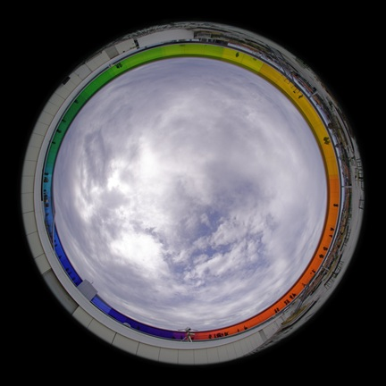
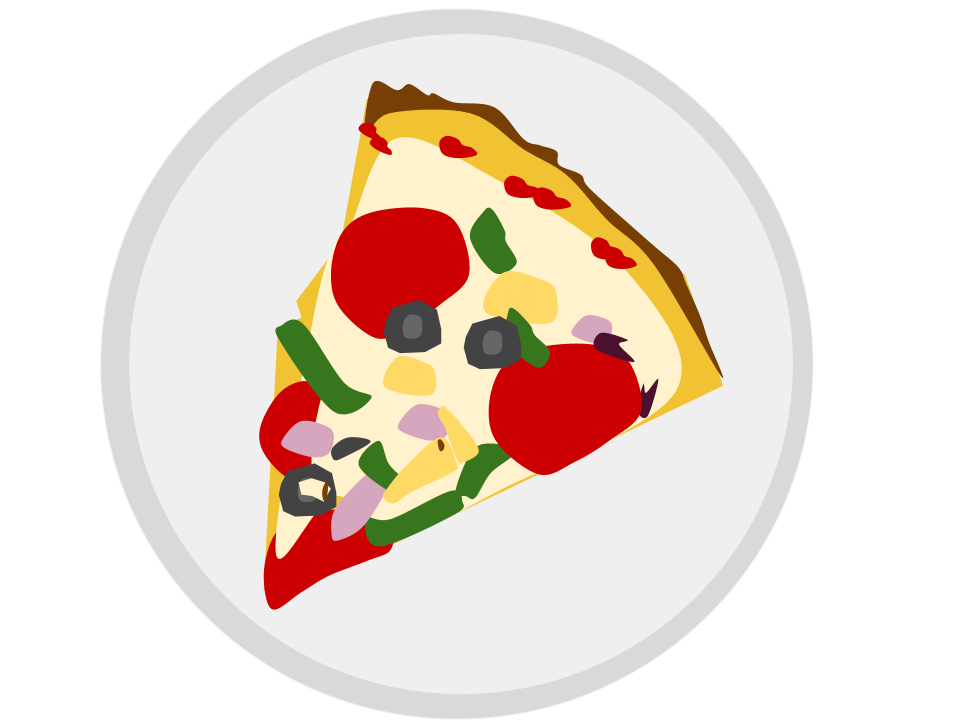
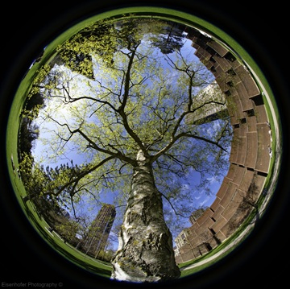
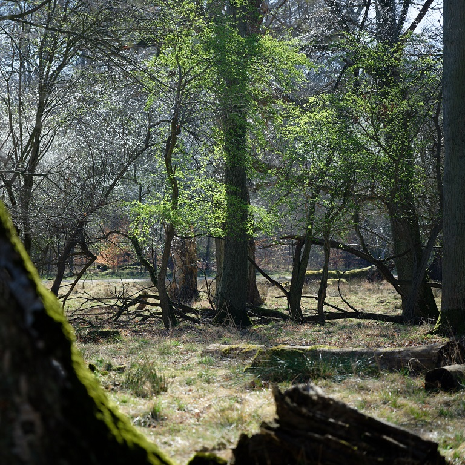
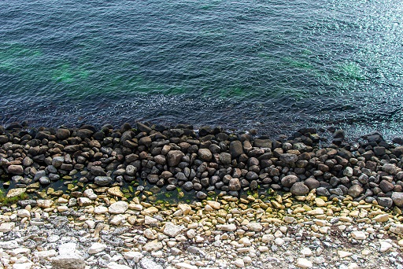
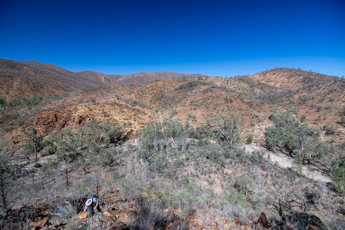
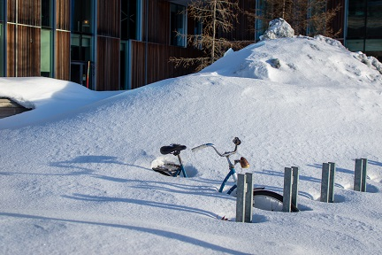

Eisenhofer Photography
About
Photography
Blog
AI statement
The Raph Round-up
Categories
All
(33)
monthly
(32)
writing
(1)

The Raph Round-up: August 2026
monthly
Back from late summer holidays, with the autumn equinox fast approaching. We had a week in Aarhus in late July, followed by a couple of weeks in the Netherlands and…
Jan 9, 2027
Raphael Eisenhofer
The Raph Round-up: July 2026
monthly
Like last month, July has seen me looking up at the huge cloud bursts, and down at the flowers and insects basking in the sun.
Aug 9, 2026
Raphael Eisenhofer
The Raph Round-up: June 2026
monthly
Summer in Denmark means long days, big clouds, and an increase in insect activity. It’s been a busy month for me in June, so I didn’t have many opportunities to get out with…
Jul 7, 2026
Raphael Eisenhofer

On normalising behaviour (and a pizza-eating rabbit hole)
writing
I’m finally getting around to getting some thoughts out of my head and onto digital pages. From what I’ve read some people do this as coping mechanism, a form of catharsis
1
.…
Jul 6, 2026
Raphael Eisenhofer
The Raph Round-up: May 2026
monthly
As the weather warmed, leaves started to fill out the canopies. We had some great weather this May (as is usual for Denmark), and I managed to get out and enjoy the latter…
Jun 2, 2026
Raphael Eisenhofer

The Raph Round-up: April 2026
monthly
I love April in Denmark. The spring ephemerals give way to trees, with fresh leaves giving the landscape a vibrancy. It was a great month for photography, and it took me…
May 11, 2026
Raphael Eisenhofer
The Raph Round-up: March 2026
monthly
March heralds the start of spring here – and is the theme of this month’s round-up. Having passed the equinox, more light is returning to the landscape, and opening up more…
Apr 3, 2026
Raphael Eisenhofer
The Raph Round-up: February 2026
monthly
Had a wonderful month visiting friends and whānau in NZ/Aus – and also a much needed break from the Northern European winter. January on the Kapiti Coast can be tumultuous…
Mar 22, 2026
Raphael Eisenhofer
The Raph Round-up: January 2026
monthly
This post marks the third year of posting the Raph Round-up! I’m glad to be sticking to these monthly posts, and I hope that you enjoy them as much as I enjoy making them.
Feb 25, 2026
Raphael Eisenhofer
The Raph Round-up: December 2025
monthly
And so, another trip around the sun.
Jan 4, 2026
Raphael Eisenhofer
The Raph Round-up: November 2025
monthly
As many trees go to slumber (and we say goodbye to leaves until April) I tried to get out and capture the last of Autumn. This edition is a photographic ode to leaves – enjoy!
Nov 30, 2025
Raphael Eisenhofer
The Raph Round-up: October 2025
monthly
And so Autumn rolls in, transforming life.
Nov 1, 2025
Raphael Eisenhofer
The Raph Round-up: September 2025
monthly
This month I’m sharing some photos from a recent trip via trains and ferries to Estonia and Finland. I had never been to a Baltic state (nor Finland) before, and the idea…
Oct 10, 2025
Raphael Eisenhofer
The Raph Round-up: August 2025
monthly
As we shift towards autumn, August spells summer’s last breaths. I’ve not had a lot of time for photography this month, but hope you enjoy what moments I captured.
Sep 1, 2025
Raphael Eisenhofer
The Raph Round-up: July 2025
monthly
July means summer in the northern hemisphere – a time for getting out and enjoying life. You’ll find a lot of insects in this month’s Round-Up!
Aug 10, 2025
Raphael Eisenhofer
The Raph Round-up: June 2025
monthly
Summer is here! In this round-up I’ll share photos from a hike, images from a new ultra wide lens I picked up, and little photo stop from my daily commute.
Jul 2, 2025
Raphael Eisenhofer
The Raph Round-up: May 2025
monthly
May has been pretty busy – had friends visiting from Adelaide, took a trip to Stockholm, and started a new job as a senior scientist at cmbio! As a result, I’ve not had much…
Jun 1, 2025
Raphael Eisenhofer

The Raph Round-up: April 2025
monthly
After a sunny April, with temperatures in the double digits (!!!), spring’s flowers are giving way to fresh leaves. This round-up is quite packed, as I’ve had a bit of extra…
May 2, 2025
Raphael Eisenhofer
The Raph Round-up: March 2025
monthly
March. A time of transition in Denmark. Life (and the sun) is slowly returning to the mostly grey and featureless landscape, making itself known in the form of flowers and…
Mar 31, 2025
Raphael Eisenhofer
The Raph Round-up: February 2025
monthly
February is already gone! After three months of darkness, the days are rapidly getting lighter (4 hours lighter than since 21 December, and ~5 minutes of extra light per day…
Mar 1, 2025
Raphael Eisenhofer
The Raph Round-up: January 2025
monthly
Happy new year! It’s the end of January 2025 as I’m writing this, and day light has already increased by ~ 1 hour and 38 minutes since the solstice! It’s enough to make it…
Feb 2, 2025
Raphael Eisenhofer
The Raph Round-up: December 2024
monthly
And so, another year passes. I’m pretty glad that I managed to get a monthly round-up done for each month of 2024 (even if some were horrendously late). I think this is an…
Dec 31, 2024
Raphael Eisenhofer
The Raph Round-up: November 2024
monthly
November was great for photography here in Copenhagen. We got back in time to witness Autumn’s influence on the trees, and had a few days of snow. So enjoy photos from two…
Dec 24, 2024
Raphael Eisenhofer
The Raph Round-up: October 2024
monthly
In October we were back in the southern hemisphere, our first time going home in 18 months! In this edition I’ll share some snaps from Adelaide, some AMAZING Aussie animals…
Dec 1, 2024
Raphael Eisenhofer
The Raph Round-up: September 2024
monthly
Hi all, this will be a shorter round-up this month, as we were in Australia / New Zealand for October, and I’ve got ~600 photos to trim down and edit …
Nov 17, 2024
Raphael Eisenhofer

The Raph Round-up: August 2024
monthly
Hi all, this month I’m sharing a few shots from our neighbourhood, a trip to a cool art exhibition, and my first ever Danish bikepacking adventure!
Nov 9, 2024
Raphael Eisenhofer
The Raph Round-up: July 2024
monthly
It’s a few months overdue, but better late than never!
Sep 25, 2024
Raphael Eisenhofer

The Raph Round-up: June 2024
monthly
June feels like it flew by, and apart from celebrating our ‘Daneaversary’ (two years in Denmark) with some friends, there’s not a lot to report on. Therefore, I wanted to…
Sep 25, 2024
Raphael Eisenhofer
The Raph Round-up: May 2024
monthly
I can’t believe we’re at the end of May already! The weather has been absolutely fantastic here in Copenhagen this month, and in this edition, we’re continuing with the…
Jun 1, 2024
Raphael Eisenhofer
The Raph Round-up: April 2024
monthly
Spring has sprung! It’s a relief to finally see more colours in Copenhagen – I hope you enjoy this update :-)
May 9, 2024
Raphael Eisenhofer
The Raph Round-up: March 2024
monthly
Hey everyone, bit more of a photo heavy round-up this month, hope you enjoy!
Apr 14, 2024
Raphael Eisenhofer

The Raph Round-up: February 2024
monthly
Welcome to another monthly round-up! You may have noticed that we have a new URL – I ended up buying a domain name and email server, so there’s now an option to sign up to a…
Mar 8, 2024
Raphael Eisenhofer
The Raph Round-up: January 2024
monthly
A resolution I made this year is to write a short summary of each month, for posterity, and for sharing with friends and family. You may be thinking, huh, why? Well, I have…
Feb 6, 2024
Raphael Eisenhofer
No matching items
Back to top